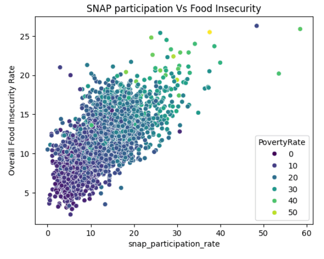
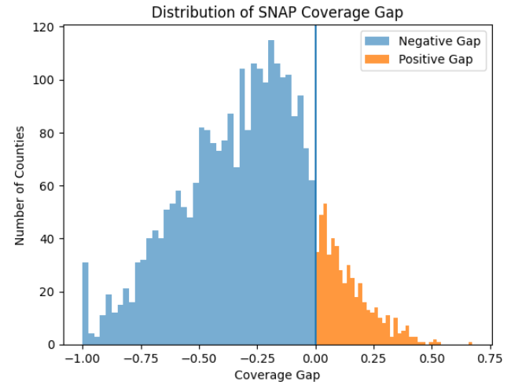
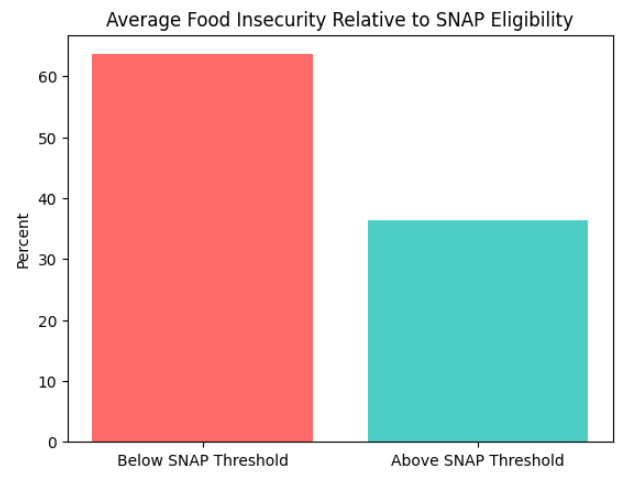
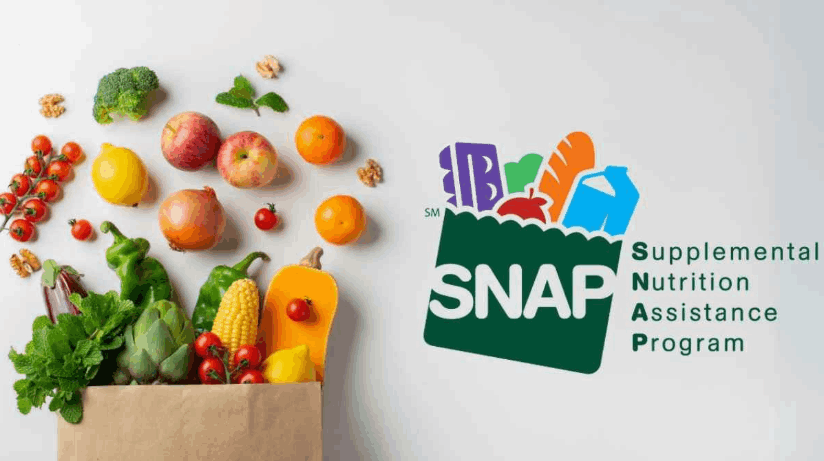

Million of Americans face limited access to affordable and nutritious food. SNAP (Supplemental Nutrition Assistance Program) is designed to reduce food insecurity by providing financial assistance for good. Government programs like SNAP aim to help - but are they enough?
DO HIGHER SNAP PARTICIPATION RATES ARE POSITIVELY ASSOCIATED WITH HIGHER FOOD INSECURITY or do they help reduce it?
This project explores whether SNAP participation reflects underlying need or effectively reduces food insecurity.
We used county-level data to analyze food insecurity across the United States.
The dataset includes SNAP participation rate, poverty rate, food insecurity rate, unemployment rate, income, and other socioeconomic indicators.
These variables represent both economic conditions and policy response factors.
Used to measure the linear relationship between SNAP participation and food insecurity while controlling for socioeconomic variables.
OLS Regression Result:
Used to capture nonlinear relationships and identifies feature importance.
Random Forest Result:

Positive relationship between SNAP participation and Food Insecurity.
Counties with higher SNAP usage tend to also have higher food insecurity.
Poverty increases along with both variables.

Negative value indicates food insecure received the SNAP benefits.
Positive value indicates food insecure households did not receive the SNAP because of poverty threshold.

%FI <= SNAP Threshold: 64%
%FI > SNAP Threshold. 36%
A gap in SNAP coverage: only 64% of food insecure households eligible for SNAP participation.
Problem 1 : SNAP is Reactive, Not Preventive
Policy Recommendation: Early identification of at-risk counties and preventive interventions
Problem 2: Structural Food Access issues
Policy Recommendation: Invest in local grocery infrastructure and support mobile food markets and transportation access
Problem 3: Poverty is the root driver
Policy Recommendation: Expand income support programs and invest in job creation and wage growth.
